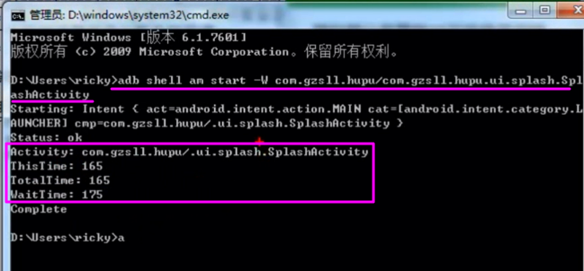
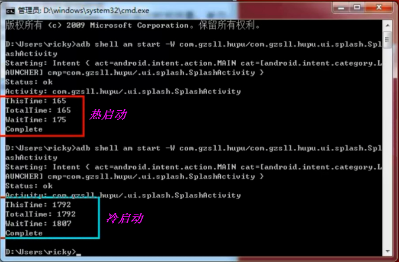
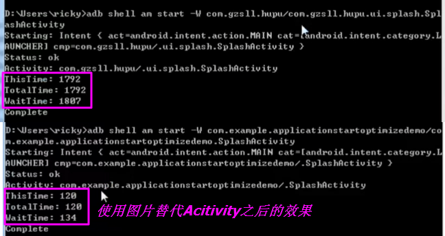
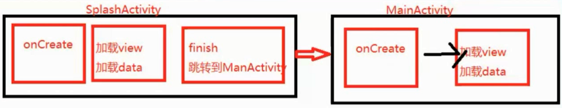
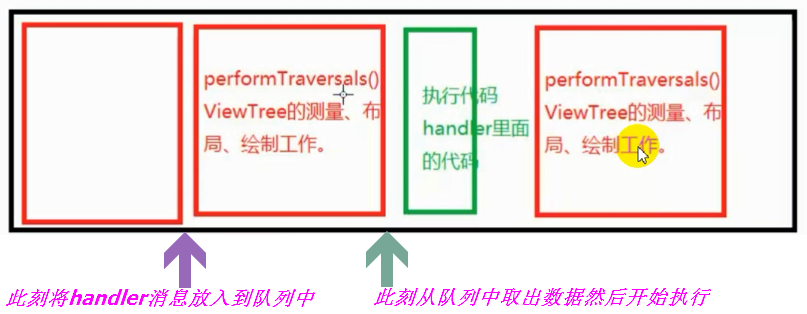
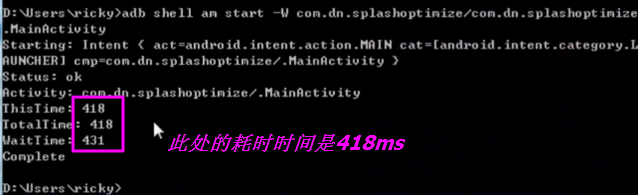
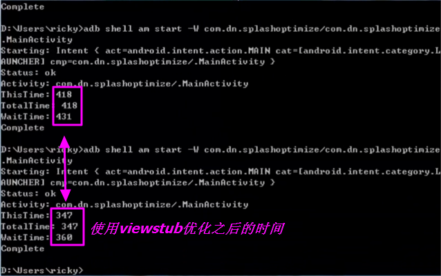
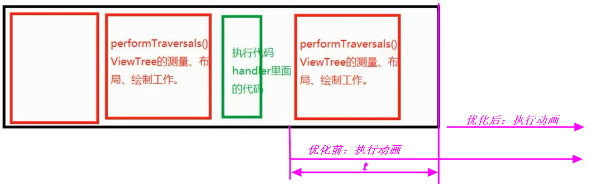

Android 性能优化之提升app启动速度
发布时间：
本文字数：2,864 字 阅读完需：约 6 分钟
1 启动的方式
启动分为两种方式：
1）冷启动：当直接从桌面上直接启动，同时后台没有该进程的缓存，这个时候系统就需要重新创建一个新的进程并且分配各种资源。
2）热启动：该app后台有该进程的缓存，这时候启动的进程就属于热启动。
热启动不需要重新分配进程，也不会Application了，直接走的就是app的入口Activity，这样就速度快很多
2. 测试应用启动的时间
使用命令行来启动app，同时进行时间测量。单位：毫秒
adb shell am start -W [PackageName]/[PackageName.MainActivity]
adb shell am start -W com.gzsll.hupu/.ui.splash.SplashActivity
adb shell am start -W com.example.applicationstartoptimizedemo/com.example.applicationstartoptimizedemo.SplashActivity
adb shell am start -W com.dn.splashoptimize/com.dn.splashoptimize.MainActivity

- ThisTime: 165 指当前指定的MainActivity的启动时间
- TotalTime: 165 整个应用的启动时间，Application+Activity的使用的时间
- WaitTime: 175 包括系统的影响时间，分配资源内存等---比ToatlTime值大。

3.应用启动的流程
Application从构造方法开始--->attachBaseContext()--->onCreate()
Activity构造方法--->onCreate()--->设置显示界面布局，设置主题、背景等等属性--->onStart()--->onResume()--->显示里面的view（测量、布局、绘制，显示到界面上）
4.减少应用的启动时间的耗时
1）、不要在Application的构造方法、attachBaseContext()、onCreate()里面进行初始化耗时操作。
2）、MainActivity，由于用户只关心最后的显示的这一帧，对我们的布局的层次要求要减少，自定义控件的话测量、布局、绘制的时间。
不要在onCreate、onStart、onResume当中做耗时操作。
3）、对于SharedPreference的初始化。
因为他初始化的时候是需要将数据全部读取出来放到内存当中。
优化1：可以尽可能减少sp文件数量(IO需要时间)；2.像这样的初始化最好放到线程里面；3.大的数据缓存到数据库里面。
app启动的耗时主要是在：Application初始化 + MainActivity的界面加载绘制时间。
Application可以优化的时间很少。主要从MainAcitivity入手。
【优化初步】
由于MainActivity的业务和布局复杂度非常高，甚至该界面必须要有一些初始化的数据才能显示。
那么这个时候MainActivity就可能半天都出不来，这就给用户感觉app太卡了。
我们要做的就是给用户赶紧利落的体验。点击app就立马弹出我们的界面。
于是乎想到使用SplashActivity--非常简单的一个欢迎页面上面都不干就只显示一个图片。

【优化升级】
但是SplashActivity启动之后，还是需要跳到MainActivity。MainActivity还是需要从头开始加载布局和数据。
想到SplashActivity里面可以去做一些MainActivity的数据的预加载。然后需要通过意图传到MainActivity。

【优化再升级】
可不可以再做一些更好的优化呢？
耗时的问题：Application+Activity的启动及资源加载时间；预加载的数据花的时间。
如果我们能让这两个时间重叠在一个时间段内并发地做这两个事情就省时间了。
解决：
将SplashActivity和MainActivity合为一个
一进来还是实现的MainActivity，SplashActivity可以变成一个SplashFragment，然后放一个FrameLayout作为根布局直接实现SplashFragment界面。
SplashFragment里面非常之简单，就是实现一个图片，启动非常快
当SplashFragment显示完毕后再将它remove。同时在splash的2S的友好时间内进行网络数据缓存。
这个时候我们才看到MainActivity，就不必再去等待网络数据返回了。
在这其中可能会出现下面的问题：
问题：SplashView和ContentView加载放到一起来做了 ，这可能会影响应用的启动时间。
解决：可以使用ViewStub延迟加载MainActivity当中的View来达到减轻这个影响。
viewStub的设计就是为了防止MainActivity的启动加载资源太耗时了。延迟进行加载，不影响启动，用户友好。
但是viewStub加载也需要时间。等到主界面出来以后：viewStub.inflate(xxxx);
【问】如何设计延迟加载DelayLoad？
第一时间想到的就是在onCreate里面调用handler.postDelayed()方法。此方法不可行。
原因是这个延迟时间无法控制。
不同的机器启动速度不一样。
如果我们这样：在onCreate中执行handler.postDelayed的延时操作，会在什么时刻执行其中的handler.post的事件呢？
@Override
protected void onCreate(Bundle savedInstanceState) {
super.onCreate(savedInstanceState);
setContentView(R.layout.activity_main);
mHandler.postDelayed(new Runnable() {
@Override
public void run() {
mProgressBar.setVisibility(View.GONE);
iv.setVisibility(View.VISIBLE);
}
}, 2500);
}
【答】是在执行完第一次的performTraversale()之后才开始执行handler.postDelay插入的动作的（perfromTraversales()方法会执行两次）。此前该动作是在MessQueue中排队等待。
开始的时候应用程序会执行一系列的动作，示意图如下：

此方法没法做到想要的效果。不同的手机完成的第一阶段的performTraversales是不同的，如果光第一阶段的perfomTraversales的就超过2500ms，则不会在执行延时加载的任务了。
需要达到的效果：应用已经启动并加载完成，界面已经显示出来了，然后再去做其他的事情。
问题：什么时候应用已经启动并加载完成，界面已经显示出来了？
onResume执行完了之后才显示完毕。不行。
onwindowfocuschange
ViewTreeObserver
5 .优化初步
【说明】最主要的优化的本质是：防止干扰MainActivity的启动，将耗时的操作都放到onResum之后。
【fragment_splash.xml】使用framLayout，显示一张图片，作为splashFrament的布局
<RelativeLayout xmlns:android="http://schemas.android.com/apk/res/android"
xmlns:tools="http://schemas.android.com/tools"
android:layout_width="match_parent"
android:layout_height="match_parent"
tools:context="com.example.applicationstartoptimizedemo.MainActivity" >
<FrameLayout
android:id="@+id/frame"
android:background="@drawable/splash12" //显示一张图片
android:layout_width="match_parent"
android:layout_height="match_parent" >
</FrameLayout>
</RelativeLayout>
【SplashFragment.java】
public class SplashFragment extends Fragment {
@Override
@Nullable
public View onCreateView(LayoutInflater inflater,
@Nullable ViewGroup container, @Nullable Bundle savedInstanceState) {
// TODO Auto-generated method stub
return inflater.inflate(R.layout.fragment_splash, container, false); //转换布局
}
}
【activity_main.xml】
<RelativeLayout xmlns:android="http://schemas.android.com/apk/res/android"
xmlns:tools="http://schemas.android.com/tools"
android:layout_width="match_parent"
android:layout_height="match_parent"
tools:context="com.example.applicationstartoptimizedemo.MainActivity" >
<FrameLayout
android:id="@+id/content"
android:layout_width="match_parent"
android:layout_height="match_parent">
<ProgressBar
android:id="@+id/progressBar1"
android:layout_width="wrap_content"
android:layout_height="wrap_content"
android:layout_gravity="center" />
<ImageView
android:id="@+id/iv"
android:layout_width="match_parent"
android:layout_height="match_parent"
android:scaleType="fitStart"
android:src="@drawable/content" />
</FrameLayout>
<FrameLayout
android:id="@+id/frame"
android:layout_width="match_parent"
android:layout_height="match_parent" >
</FrameLayout>
</RelativeLayout>
【MainActivity.java】
public class MainActivity extends FragmentActivity {
private Handler mHandler = new Handler();
private ProgressBar mProgressBar;
@Override
protected void onCreate(Bundle savedInstanceState) {
super.onCreate(savedInstanceState);
setContentView(R.layout.activity_main);
mProgressBar = (ProgressBar) findViewById(R.id.progressBar1);
final SplashFragment splashFragment = new SplashFragment();
final FragmentTransaction transaction = getSupportFragmentManager()
.beginTransaction();
transaction.replace(R.id.frame, splashFragment);
transaction.commit();
// mHandler.postDelayed(new DelayRunnable(this, splashFragment,
// mProgressBar), 2500);
getWindow().getDecorView().post(new Runnable() { //判断当窗体加载完毕的时候,立马再加载真正的布局进来
@Override
public void run() {
mHandler.postDelayed(new DelayRunnable(MainActivity.this, splashFragment,
mProgressBar), 2500); //此处的2.5s此时真正的延时时间
}
});
}
static class DelayRunnable implements Runnable {
private WeakReference<Context> contextRef;
private WeakReference<SplashFragment> fragmentRef;
private WeakReference<ProgressBar> progressBarRef;
public DelayRunnable(Context context, SplashFragment splashFragment,
ProgressBar progressBar) {
contextRef = new WeakReference<Context>(context);
fragmentRef = new WeakReference<SplashFragment>(splashFragment);
progressBarRef = new WeakReference<ProgressBar>(progressBar);
}
@Override
public void run() {
ProgressBar progressBar = progressBarRef.get();
if (progressBar != null)
progressBar.setVisibility(View.GONE);
FragmentActivity context = (FragmentActivity) contextRef.get();
if (context != null) {
SplashFragment splashFragment = fragmentRef.get();
if (splashFragment == null)
return;
final FragmentTransaction transaction = context
.getSupportFragmentManager().beginTransaction();
transaction.remove(splashFragment); //移除fragment
transaction.commit();
}
}
}
@Override
protected void onDestroy() {
super.onDestroy();
mHandler.removeCallbacksAndMessages(null);
}
}
【效果】

6 使用Viewstub优化
在用户点击直接进入的是MainAcitivity，但是MainActivity中，分为了两路同时加载，如下下面代码执行了两个getWindow().getDecorView().post；
一路是在加载viewStub布局，此处的viewStub布局是activity_main，看下面的源码。
一路是延时加载splash的动画界面，定义了专门的DelayRunnable类。
需要注意的是：getWindow().getDecorView().post的执行时机是在onResume()，即真正的Acitivity可见的时候才会加载ViewStub，才会加载splash。
@Override
protected void onCreate(Bundle savedInstanceState) {
super.onCreate(savedInstanceState);
setContentView(R.layout.activity_main);
splashFragment = new SplashFragment();
FragmentTransaction transaction = getSupportFragmentManager().beginTransaction();
transaction.replace(R.id.frame, splashFragment);
transaction.commit();
viewStub = (ViewStub)findViewById(R.id.content_viewstub);
//1.判断当窗体加载完毕的时候,立马再加载真正的布局进来
getWindow().getDecorView().post(new Runnable() {
@Override
public void run() {
// 开启延迟加载
mHandler.post(new Runnable() {
@Override
public void run() {
//将viewstub加载进来
viewStub.inflate();
}
} );
}
});
//2.判断当窗体加载完毕的时候执行,延迟一段时间做动画。
getWindow().getDecorView().post(new Runnable() {
@Override
public void run() {
// 开启延迟加载,也可以不用延迟可以立马执行（我这里延迟是为了实现fragment里面的动画效果的耗时）
mHandler.postDelayed(new DelayRunnable(MainActivity.this, splashFragment) ,2000);
// mHandler.post(new DelayRunnable());
}
});
//3.同时进行异步加载数据
}
【布局的viewStub】
【activity_main.xml源码】
<RelativeLayout xmlns:android="http://schemas.android.com/apk/res/android"
xmlns:tools="http://schemas.android.com/tools"
android:layout_width="match_parent"
android:layout_height="match_parent"
tools:context="com.example.applicationstartoptimizedemo.MainActivity" >
<ViewStub
android:id="@+id/content_viewstub"
android:layout="@layout/activity_main_viewstub"
android:layout_width="match_parent"
android:layout_height="match_parent"/>
<FrameLayout
android:id="@+id/frame"
android:layout_width="match_parent"
android:layout_height="match_parent" >
</FrameLayout>
</RelativeLayout>
其中指定了ViewStub的layout参数，指向的是之前的acitivity_main的布局；
使用VIewStub系统会延时加载，只有在使用到的时候才会加载该布局。layout参数指定的布局源码如下：
【activity_main_viewstub.xml源码】此布局填充的内容就是原来的MainAcitivity要指定的布局内容，其中使用ImageView临时作为内容加载。
<?xml version="1.0" encoding="utf-8"?>
<FrameLayout xmlns:android="http://schemas.android.com/apk/res/android"
android:id="@+id/content"
android:layout_width="match_parent"
android:layout_height="match_parent" >
<ProgressBar
android:id="@+id/progressBar1"
android:layout_width="wrap_content"
android:layout_height="wrap_content"
android:layout_gravity="center" />
<ImageView
android:id="@+id/iv"
android:layout_width="match_parent"
android:layout_height="match_parent"
android:scaleType="fitStart"
android:src="@drawable/content" />
</FrameLayout>
【优化说明】此处主要做了两项优化：
第一项优化是使用fragment优化，在fragment的布局中添加splash的启动页面。
第二项优化是优化MainAcitivity的加载时间，使用viewStub先不加载MainActivity的布局，在onResume 时候再加载。
使用了双加载机制，例如：splash的动画执行时间是2s，而MainActivity的viewStub加载时间是1s，那必然在splash加载的过程中viewStub已经加载成功了，是一个并行的过程。
注意：在此处同时也是可以加载MainActivity使用的到的数据，比如网络数据等等，下面源码中展示的提示。
@Override
protected void onCreate(Bundle savedInstanceState) {
super.onCreate(savedInstanceState);
setContentView(R.layout.activity_main);
splashFragment = new SplashFragment();
FragmentTransaction transaction = getSupportFragmentManager().beginTransaction();
transaction.replace(R.id.frame, splashFragment);
transaction.commit();
viewStub = (ViewStub)findViewById(R.id.content_viewstub);
//1.判断当窗体加载完毕的时候,立马再加载真正的布局进来
getWindow().getDecorView().post(new Runnable() {
@Override
public void run() {
// 开启延迟加载
mHandler.post(new Runnable() {
@Override
public void run() {
//将viewstub加载进来
viewStub.inflate();
}
} );
}
});
//2.判断当窗体加载完毕的时候执行,延迟一段时间做动画。
getWindow().getDecorView().post(new Runnable() {
@Override
public void run() {
// 开启延迟加载,也可以不用延迟可以立马执行（我这里延迟是为了实现fragment里面的动画效果的耗时）
mHandler.postDelayed(new DelayRunnable(MainActivity.this, splashFragment) ,2000);
// mHandler.post(new DelayRunnable());
}
});
//3.同时进行异步加载数据
}
优化之后的时间对比：此处的viewstub的布局比较简单，看到的优化时间比较短，如果布局非常复杂，看到的优化时间会更明显。

7 整理
【0】最主要的优化的本质是：防止干扰MainActivity的启动，将耗时的操作都放到onResum之后。
【1】可以将 两个getWindow().getDecorView().post(new Runnable()整合到一个方法中；
@Override
protected void onCreate(Bundle savedInstanceState) {
super.onCreate(savedInstanceState);
setContentView(R.layout.activity_main);
splashFragment = new SplashFragment();
FragmentTransaction transaction = getSupportFragmentManager().beginTransaction();
transaction.replace(R.id.frame, splashFragment);
transaction.commit();
viewStub = (ViewStub)findViewById(R.id.content_viewstub);
//1.判断当窗体加载完毕的时候,立马再加载真正的布局进来
getWindow().getDecorView().post(new Runnable() {
@Override
public void run() {
// 开启延迟加载
mHandler.post(new Runnable() {
@Override
public void run() {
//将viewstub加载进来
viewStub.inflate();
} );
}
//2.判断当窗体加载完毕的时候执行,延迟一段时间做动画。
//开启延迟加载,也可以不用延迟可以立马执行（我这里延迟是为了实现fragment里面的动画效果的耗时）
mHandler.postDelayed(new DelayRunnable(MainActivity.this, splashFragment) ,2000);
//mHandler.post(new DelayRunnable());
});
//3.同时进行异步加载数据
}
【2】此处只是为了模拟，将fragment的延时时间设置为了2000。如果执行动画则不必再延时，执行post；
mHandler.post(new DelayRunnable());
【3】问为什么view.inflate 不放在framgent的移除之后来执行？如下代码展示
static class DelayRunnable implements Runnable{
private WeakReference<Context> contextRef;
private WeakReference<SplashFragment> fragmentRef;
public DelayRunnable(Context context, SplashFragment f) {
contextRef = new WeakReference<Context>(context);
fragmentRef = new WeakReference<SplashFragment>(f);
}
@Override
public void run() {
// 移除fragment
if(contextRef!=null){
SplashFragment splashFragment = fragmentRef.get();
if(splashFragment==null){
return;
}
FragmentActivity activity = (FragmentActivity) contextRef.get();
FragmentTransaction transaction = activity.getSupportFragmentManager().beginTransaction();
transaction.remove(splashFragment);
transaction.commit();
//将viewstub加载进来
viewStub.inflate();
}
}
}
如果这样写就是串行，执行的顺序就是在执行完动画之后，再执行viewStub的加载，没有起到同时执行多任务，达不到节省时间的效果。
【4】在splash页面进行“跳过”处理。本质就是fragment与MainActivity的交互，可以使用接口，也可以使用第三方EventBus等，方法有多种。
【5】ViewStub只会加载一次，在使用的时候才会去加载。
【6】涉及到第三方的需要在application中初始化的尽量在子线程中初始化。
【7】如果向之前一样mainActivity没有展示在用户面前就开始执行动画，则相当于t时间浪费。

【8】白屏的问题在此处应该已经不存在了，需要验证一下。
源码下载地址：https://download.csdn.net/download/wsxingjun/10583183